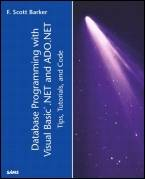

|  | Database Programming with Visual Basic® .NET and ADO.NET: Tips, Tutorials, and CodeBy F. Scott Barker Sams Publishing, September 12, 2002 The topic combination of VB .NET and ADO.NET is unbeatable. VB .NET is the most popular language in which to code. And, every developer needs to understand ADO.NET to allow data to be accessed from a Web site. In this book Developers will be shown numerouse code examples that will illustr4ate how to program database driven applications within the .NET Framework. The book is aimed at both established and new VB Developers. Important topics covered include: Visual Studio development environment, ASP.NET applications, Windows Forms application, using VB .NET with ADO.NET, complex queries, security, COM interop., and application deployment. About the AuthorF. Scott Barker holds a bachelor of science in computer science and has worked as a developer in the database field for more than 16 years, first with Clipper, and then with Visual Basic, SQL Server, and Microsoft Access for the past 10 years. Scott has already created and deployed a number of ASP.NET Web sites for his clients. Working at Microsoft for two years, Scott was a member of the Microsoft Access and FoxPro teams. Since leaving, he has been a contractor with Microsoft developing in-house tools used throughout Microsoft. With his company, Applications Plus, Scott has also been doing contract development for many Fortune 500 companies, developing in ASP.NET, Visual Basic .NET, C#, Visual Basic/Access/Office, and SQL Server. Scott has trained for Application Developers Training Company and others all around the U.S. and is a frequent speaker at Microsoft conferences throughout the U.S., Canada, South Asia, and Europe. Through his classes and conferences, Scott has trained thousands of developers. Scott is a writer for a number of development magazines and is the author of F. Scott Barker's Microsoft Access 2002 Power Programming, published by Sams, and Access 97 Power Programming, published by Que. Scott can be reached at his Web site at www.appsplus.com, or via e-mail at FSBarker@AppsPlus.com. IntroductionDear Reader, Here we are on the brink of what feels like another revolution of computing: .NET. Now I know what some people are saying: .NET is merely evolutionary, not revolutionary. I disagree. Here I sit at the San Francisco airport, waiting for my return flight home to Seattle, sipping on my ice quad venti vanilla latte (yes, that is a coffee drink) pondering all wonderful technology I witnessed this week. You see, I spent the past five days sitting in on Paul Sheriff's "Jumpstart Introduction to VB.NET Week." Along with around 20 regular students, Paul had asked a few of his friends who were also interested in presenting the training down for what is called "Train the Trainer." By the time you read this, I will have presented the training myself a few times. I have to admit I have not been as excited about a product like this since my early days of working on the Access team. (No snide remarks about Access, please.) I have been working primarily in Access/Visual Basic/SQL Server for the past 10 years-and making a good living at it. The Web daunted me with all that there was to develop for it using products such as ASP and HTML. That has all changed. Now the line between developing for the Web and desktop has become almost invisible. Developing with Visual Basic .NET and databases is more powerful than ever, and you can easily blend creating Windows Forms (Visual Basic .NET) and Web Forms (ASP.NET) into the same solution. One of the most exciting things is that when you know how to work with ADO.NET using Windows Forms, you can use similar techniques and the same objects in Web Forms. I hope that, with this book, you will become as excited as I am about creating database applications using Visual Basic .NET! Sincerely, F. Scott Barker
|